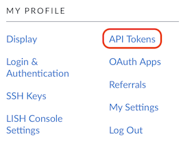
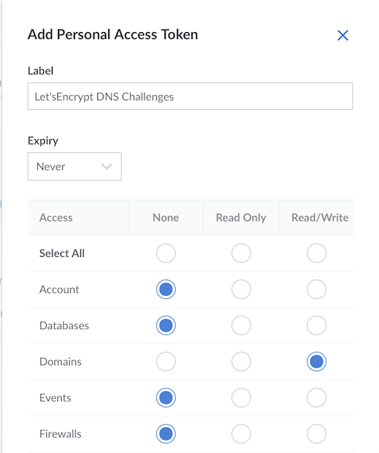
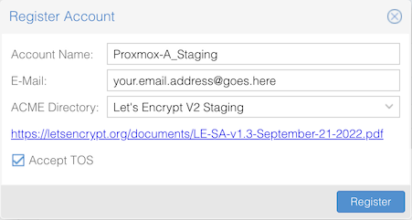
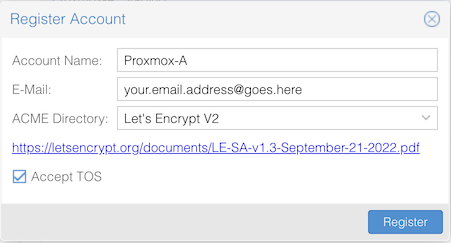
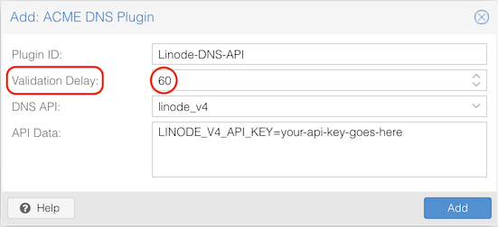
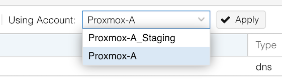
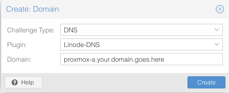
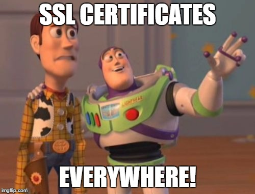

5 minutes
Let’s Encrypt SSL Certificates for Proxmox VE Using Linode DNS
If you’re a fan of Proxmox Virtualization Environment (PVE) like I am, you’ll also likely be a fan of the fact that your Proxmox VE server(s) can utilize a free service called Let’s Encrypt to acquire a valid SSL certificate.
Let’s Encrypt works by first making you verify ownership of a domain or server, typically using either an HTTP connection to the server, or through a specific DNS record lookup. Once you’ve proven ownership, a certificate is automatically generated and downloaded (and optionally auto-installed on the server) to provide a “valid” TLS connection between your web browser and the server.
This is much preferable to the default self-signed certificates that come installed “out-of-the-box,” generating security warnings and generally making it slightly less pleasant to administer your Proxmox box.
In this example, since I’m a fan of Linode and their hosting services, and because their DNS API is supported for Let’s Encrypt DNS challenges, I’ll be using Linode DNS for the validation process.
Creating a Linode API Token
Begin by creating an API Token in your Linode account that has permissions to create and delete DNS records.
- Log into Linode in your web browser
- Click your Profile avatar in upper right -> Click API Tokens

3. Click Create Personal Access Token
4. Create a Label (name) and set an Expiry Date (if desired)
5. Since this token is only for DNS (aka Domains), set all categories to None, and change Domains to Read/Write

📝 Depending on your domain and use-case, it’s highly advisable to set the Default TTL for your Linode DNS records to something very low (ideally 30 seconds, or 2 minutes), at least while you’re setting up Let’s Encrypt. Setting the TTL lower helps prevent the ephemeral DNS records used for the DNS challenge from being cached for long periods of time, which can be problematic if a validation fails and you need to try again.
Configuring Proxmox PVE for ACME / Let’s Encrypt
Once you’ve created a Linode API Token (and saved it or wrote it down… right?), log into your Proxmox VE server’s web GUI.
From the left-hand menu, navigate to Datacenter -> ACME.
Under the Accounts section, click Add.
- Create an account for Let’s Encrypt Staging by creating a descriptive account name and providing your email address.
- From the ACME Directory drop-down menu, select Let’s Encrypt V2 Staging.
- Click the box to Accept TOS (Terms of Service)
- Click Register
- Repeat steps 1-4 again, but this time select Let’s Encrypt V2 from the ACME Directory drop-down menu.


📝 I strongly suggest creating accounts for both Staging and Non-Staging versions of Let’s Encrypt. Using the Staging version allows you to test the setup without the risk of getting temporarily rate-limited by Let’s Encrypt for too many failures in a row. Staging certificates follow the same process as the real certificates, but their root CA is untrusted by default in all browsers. Once you get the process working in Staging, switching over to the real Let’s Encrypt environment will get you trusted certificates.
Under the Challenge Plugins section, click Add.
- Create a memorable name, such as Linode-DNS-API
- Change Validation Delay from 30 seconds to (at least) 60 seconds
- From the DNI API drop-down menu, choose linode_v4
- In the box labeled API Data, enter your Linode API Token in the following form: LINODE_V4_API_KEY=your-api-key-goes-here
📝 When entering your Linode API token, make sure not to input any quotes or extraneous whitespace.

📝 When configuring the DNS plugin, be sure to increase the validation delay from the default 30 seconds. I recommend at least 60 seconds, as Linode’s DNS record creation takes significantly longer than 30 seconds. If the validation delay isn’t sufficiently long enough to allow for the DNS record’s successful creation, the Let’s Encrypt DNS validation will never complete successfully.
Acquiring SSL Certificates from Let’s Encrypt
Lastly, back at the left-side Proxmox VE menu, select the PVE node that needs an SSL certificate (underneath Datacenter).
- Click on System -> Certificates
- Under the ACME section, click Using Account:, select your Staging account and click Apply.

3. Click thd Add button and change Challenge Type to DNS
4. At the Plugin: drop-down menu, select the Linode DNS plugin you created above.

5. In Domain: enter the hostname and domain name (aka FQDN) you’re acquiring a certificate for, then click Create.
6. Once you’ve added the new ACME entry, click Order Certificates Now to run the Let’s Encrypt validation challenge.
Assuming everything is set up correctly, you should be able to watch your PVE server run through a DNS challenge, with the temporary TXT verification records being created and deleted automatically through the Linode API. Once complete, your Proxmox VE server will automatically install the new certificate and restart the web GUI.
📝 If the DNS challenge process fails, the first culprit is likely going to be the validation delay. If you’ve already set the validation delay to 60 seconds, try increasing it even higher to 90 seconds, 120 seconds, or even more. This should allow for plenty of time for the DNS TXT record(s) to be created and reachable globally.
📝 Additionally, when logged into Linode, watch the notifications section in the GUI, which will report to you in real-time when the DNS TXT records are created or deleted. If you aren’t seeing any activity for DNS changes in your Linode account when your PVE node is running the Let’s Encrypt process, verify that you entered the Linode API key correctly as outlined under Challenge Plugins above, and ensure you’re using the Linode_V4 API (which is the most current version as of the writing of this blog post).
If you used the Let’s Encrypt V2 Staging account for the first attempt, you’ll still be seeing an invalid SSL certificate error in your browser at this point. Wait a few minutes (you remembered to set the default TTL to a sufficiently low value… right?), then run through the above steps 1-6 again but change the Account to the non-Staging version.
Once the validation process completes for the real Let’s Encrypt validation environment and the GUI restarts again, you should be seeing a valid (trusted) SSL certificate on your Proxmox VE now (you may need to close/reopen the browser window). And conveniently, the renewal process will happen automatically every 90 days to avoid the certificate expiring.
Enjoy!
